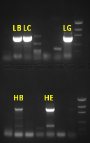

Services | Hybridoma antibody sequencing service
We offer several key advantages to ensure the success and accuracy of your research. Please complete the form to request a quote.
Most Competitive Pricing in the Market
Over the past eight years, we have continually improved our hybridoma sequencing techniques. Our fast and accurate sequencing platform now allows us to offer the most competitive pricing currently available in the market.
Proven Success Rate
We have completed over 1,000 projects with a 100% success rate.
High Accuracy
Our high-throughput sequencing platform provides over hundreds of sequence copies for consensus, ensuring highly reliable data for your research.
Rapid Turnaround Time
The turnaround time for fewer than 24 clones is one week. For urgent requests of a few clones, we can provide the sequencing results in 2-3 days.
Sensitive Cloning Technique
We can clone antibody sequences from single cells, dead hybridomas, and hybridomas with a low copy number of antibody mRNA.
|
 |
HB and HE are the same VH gene LG: VL gene LB/LC: pseudogene |
As shown in the picture above, the VL gene and VH gene were recovered from the dead hybridoma cells.
Expertise in Difficult Hybridoma Cloning
In some cases, the antibody sequence in the hybridoma is highly similar to that of the myeloma (specifically the hybridoma fusion partner). The cloned product is a mixture of these sequences, which can cause conventional methods to fail when identifying the antibody sequences. Our specialized workflow is designed to overcome this limitation, ensuring accurate results despite these similarities.
Sequencing of Oligoclonal Hybridomas
In practice, we have found that approximately one-quarter of hybridomas are not monoclonal. The resulting sequencing products often contain a mixture of multiple sequences that conventional methods fail to identify every one of them. Our workflow is designed to address these challenges by successfully cloning all antibody sequences in these scenarios.
PhD-Level Oversight
All sequencing data generated by the instrument undergoes a comprehensive review by a PhD scientist. This process is designed to identify and eliminate any potential program reading errors.
Strict Quality Control in Reporting
Because DNA sequences are difficult to identify manually, we utilize software and the standard quality control process to prevent potential errors during the report generation. This ensures that all final reports are accurate.